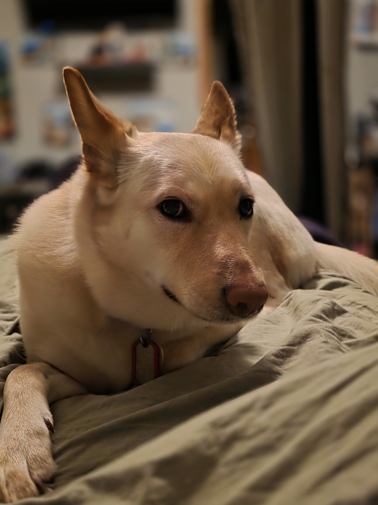

Sakura Kills Everything
v1.0E · Incident Files

Backyard Incident Files
Choose today’s incident. Every report is official. None of them are accurate.
01
The Bird Incident
A bird violated restricted airspace. Birds, it turns out, can be caught.
Playable
02
Squirrel Surveillance
A suspect on the fence. A perfect record of zero squirrel catches, defended.
Playable
03
Rabbit at the Garden Frontier
A border incident at the garden — chase the rabbit across the yard. Plays differently.
Playable
04
Vorg Watch
An evidence-board investigation of the far corner. The Vorg remains unconfirmed.
Playable